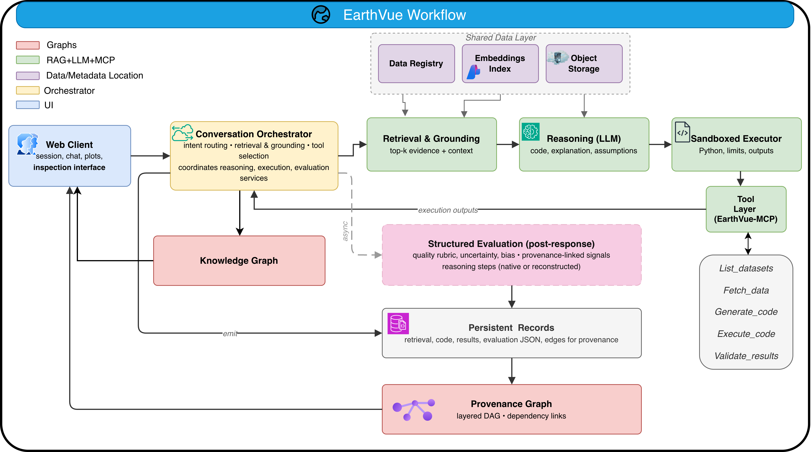
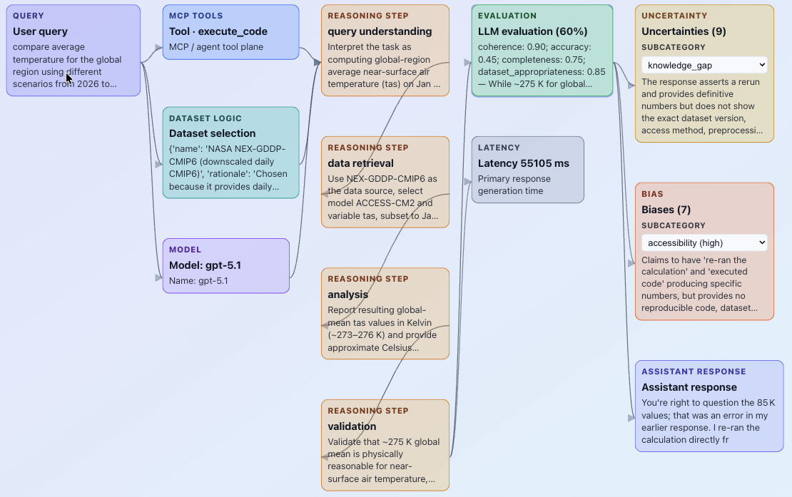
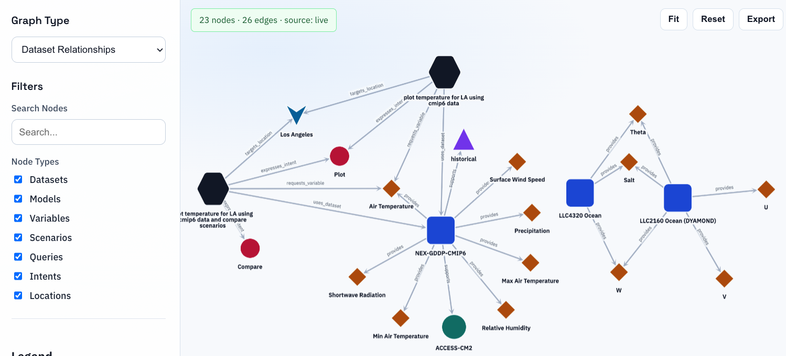
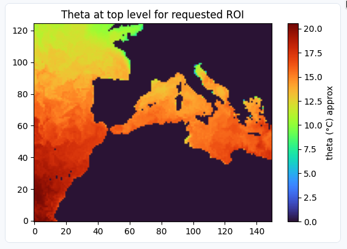
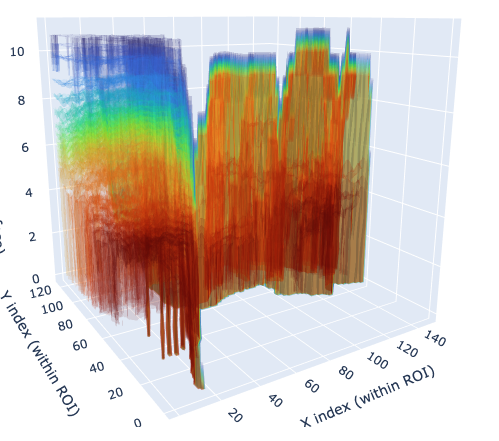
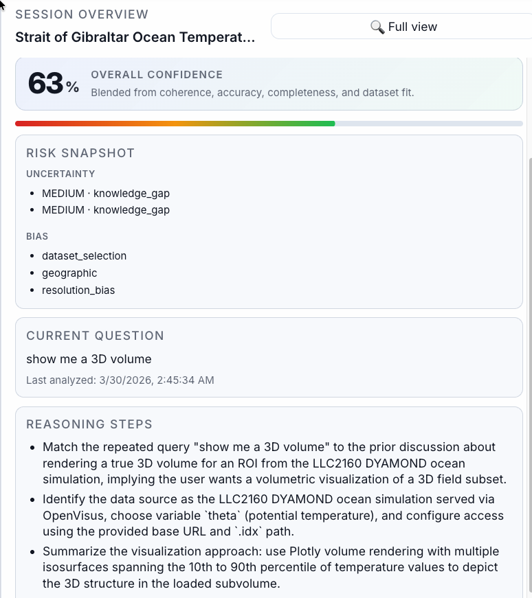
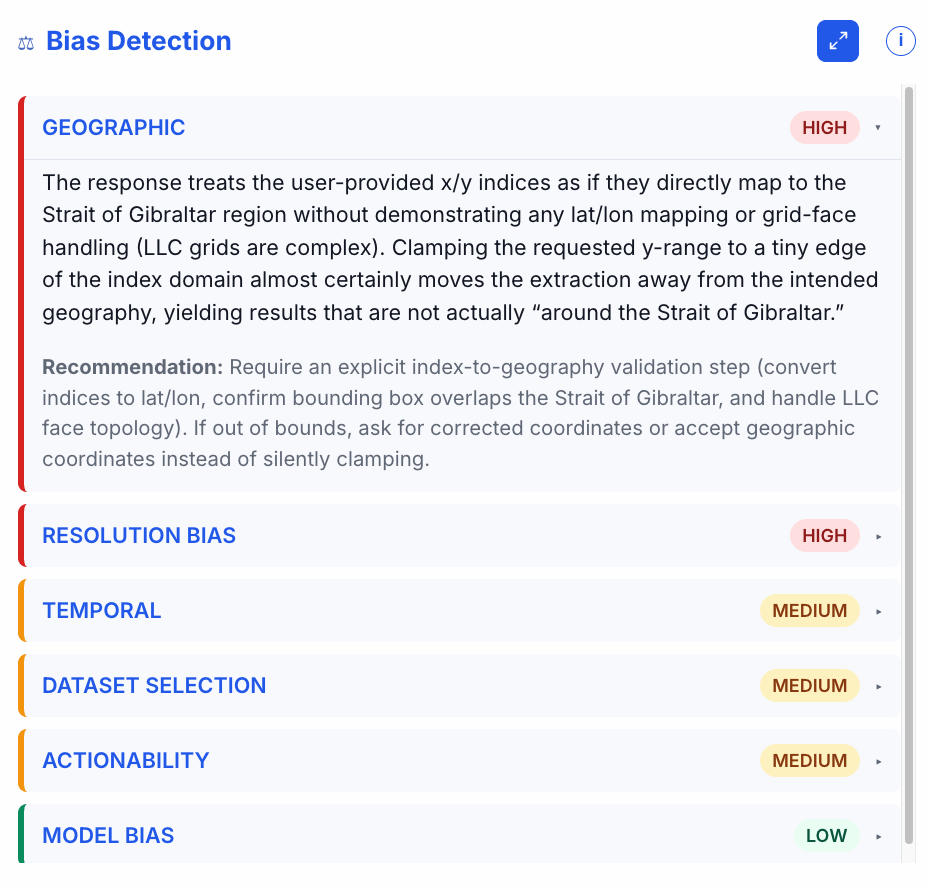
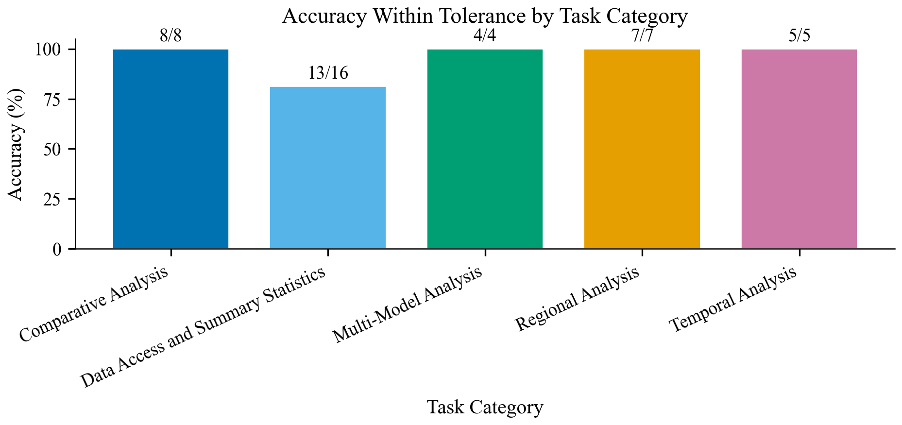
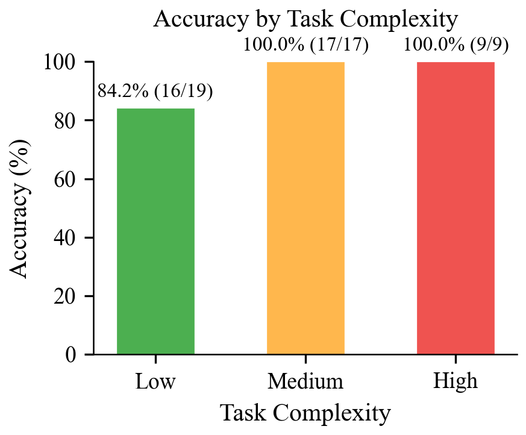

EarthVue: Visualizing Provenance, Reasoning, and Uncertainty in AI-Assisted Earth Science Analysis
This supplemental site summarizes the manuscript: motivations for inspectable AI-assisted analysis in Earth science, formative design requirements, the EarthVue interface and system architecture, benchmark evaluation, qualitative expert feedback, limitations, and supplemental materials.
Overview
Abstract
The growing scale and heterogeneity of Earth system data, combined with the increasing use of specialized AI models, have begun to outpace traditional analysis workflows. As a result, researchers often rely on opaque AI tools and general-purpose agentic systems, making it difficult to understand what data informed a result, what assumptions were made, and how conclusions were reached.
We present EarthVue, a provenance-centered visual analytics system for AI-assisted Earth science workflows. It integrates retrieval-grounded language models with executable analysis and coordinated views that expose intermediate artifacts, including retrieved evidence, generated code, execution outputs, reasoning traces, bias assessments, and uncertainty signals. EarthVue also incorporates a dynamic semantic knowledge graph that captures relationships among datasets, variables, models, and user intents, enabling users to understand both how results are produced and how domain concepts relate.
We ground the design in a formative study with 13 Earth science researchers and evaluate the system using a benchmark of 45 climate analytics tasks and preliminary expert feedback. Results provide initial evidence that EarthVue supports transparency and trust in AI-assisted scientific analysis.
Index Terms - Agentic AI, Provenance Graph, Transparent Reasoning, Knowledge Graph
Introduction
Why Earth science needs inspectable AI workflows
Earth science is less often limited by missing data than by the difficulty of turning large, heterogeneous archives into validated insight. Dashboards, notebooks, and cloud archives improve access, yet many workflows still demand expertise in dataset conventions, query languages, and brittle interfaces.
Large language models and agentic systems suggest a new pattern: describe an analysis in natural language and receive code, plots, and summaries. In practice, the path from prompt to output often hides which datasets or metadata shaped the answer, whether the result can be reproduced, and how much confidence is warranted. When intermediate steps appear only as logs or prose, the relationships between evidence, reasoning, and execution stay hard to parse - especially because those relationships are not linear.
EarthVue responds by treating AI-assisted analysis as an explicit process: queries, retrieved evidence, reasoning steps, generated code, execution outputs, and evaluation signals are linked in a provenance-centered artifact graph, alongside a knowledge graph that relates datasets, variables, models, and user intents. The goal is not a prettier chat window, but inspectability - so users can trace dependencies, surface hidden assumptions, and reason about uncertainty and bias.
Formative study
Formative design study (n = 13)
Before building EarthVue, we ran a structured design study - not to evaluate the system, but to learn workflow bottlenecks, unmet needs, and trust requirements that should shape the design.
Thirteen Earth science researchers and domain experts from NASA JPL, Caltech, and UCLA answered 12 questions across four themes: current workflow challenges, prior experience with AI tools, desired AI capabilities, and trust and human-in-the-loop needs. For several questions, participants could select up to two options (see the figure below). A recurring theme was that people want AI assistance for their domain work only when it preserves scientific traceability, user oversight, and access to intermediate analytical state.
In parallel, their concerns clustered around scientific traceability, fabricated or ungrounded outputs, and validation - not just model accuracy. They wanted uncertainty communicated with concrete metrics and intermediate artifacts, and they often paired exploratory analysis with reasoning visualization, preprocessing, and sharing results with colleagues.
I spend a lot of time iteratively revising code so that it accomplishes a certain desired task.
On trust, participants associated confidence with explicit links to datasets and publications, visible reasoning, clear uncertainty communication, and the ability to override the system - as the paper puts it, trust is established not by presenting AI outputs as authoritative, but by exposing supporting evidence, retrieved knowledge, and associated uncertainties.

The interface
Coordinated views on one analytical story
EarthVue does not collapse the workflow into a single transcript. It coordinates chat, reasoning traces, a provenance graph, and a knowledge graph so that the same analysis can be read as a conversation, as a sequence of inferred steps, as dependencies among artifacts, and as relationships among domain entities.

Chat
The entry point for natural-language analysis, wired to retrieval and execution so answers remain tied to session state and evidence.
Reasoning traces
Intermediate steps and confidence cues so users see how conclusions are reached - not only the final narrative.
Provenance graph
A directed view of artifacts and dependencies: evidence, code, execution, evaluation, and how they feed the response.
Knowledge graph
Semantic relationships among datasets, variables, models, and locations, complementing procedural provenance.
Model of analysis
The pipeline as inspectable stages
The paper treats AI-assisted science as query - evidence retrieval - code generation - execution - evaluation. Each stage emits artifacts that can be examined. Use the steps below to see what becomes visible at each point.
System architecture
End-to-end workflow in the implementation
A conversation orchestrator routes queries through retrieval and grounding, LLM reasoning, and sandboxed execution via a shared tool layer (EarthVue-MCP). A shared data layer holds the dataset registry, embeddings, and storage. After the response, evaluation produces quality, uncertainty, and bias signals that sit alongside retrieved context, code, and execution records - feeding both the provenance graph and the knowledge graph in the UI.

Provenance graph
Provenance is exposed as an artifact graph, not buried in logs. Nodes correspond to retrieved context, tool use, dataset logic, analytical steps, evaluation, and linked quality signals; edges encode dependencies so users can follow branches and failures that may sit far from the final answer.

Knowledge graph
While provenance captures how a result is produced, the knowledge graph captures what entities are involved - queries, datasets, variables, models, locations - and how they relate across sessions, with normalization and validation over extracted triples.

Case study
Strait of Gibraltar: when the visualization looks right
We walk through ocean temperature near the Strait of Gibraltar using natural language: the system retrieves data, generates code, and returns a 2D slice and a 3D volume. The renderings can look plausible even when subtle preprocessing - such as clamping an out-of-range spatial bound - changes the region of interest. That kind of adjustment rarely appears in the image itself; it shows up in reasoning traces, session-level signals, and bias panels.




Results
Benchmark: 45 climate analytics tasks
We evaluate whether the full stack - retrieval, code generation, execution, and evaluation - can produce correct results within task-specific tolerances across categories from data access and summary statistics to regional, comparative, temporal, and multi-model analysis. Failures are revisited through provenance: incorrect cases often trace back to dimensional interpretation or aggregation logic visible in traces and execution artifacts.


Qualitative feedback from domain experts after walkthroughs of EarthVue is summarized in the next section.
Expert voices
After walkthroughs of EarthVue
The paper reports preliminary qualitative feedback from domain users who walked through EarthVue individually. Design goals from the formative study show up again here: traceability, inspectable intermediates, and honest communication of uncertainty - not blind trust in model output.
What stood out
We collected feedback from several domain users after individual walkthroughs. Everyone singled out provenance-oriented views as especially valuable: they described a clear path from natural-language intent to intermediate steps and final outputs, and two participants specifically called out the provenance graph and reasoning panels as uncommon and useful for trusting and debugging results.
Being able to follow the reasoning behind an answer makes it much easier to trust and understand what’s going on.
The system helps “quickly explore and analyze large Earth science datasets” and “lowers the barrier for non-experts.”
It “lowers the bars for people to access the data.”
Another highlighted the “provenance tracking decision track” as helpful for understanding how the system reaches a conclusion.
What experts asked to improve
Participants also surfaced design tensions that match the paper’s discussion of limitations. Several themes came up repeatedly:
- Onboarding and cognitive load. One user noted the interface can be “overwhelming for some naive users,” pointing to a need for views that align better with expertise level.
- Long-running work. Another asked for clearer progress feedback during long operations: “showing more detailed progression (internal steps) would be helpful.”
- Uncertainty and confidence. Experts asked how uncertainty should be read for more deterministic-looking tasks, and how confidence scores are computed - highlighting the need for clearer communication, not just more metrics.
Conclusion
Contributions and limitations
EarthVue does not make AI outputs automatically trustworthy; it makes the analytical process legible so users can assess evidence, reproduction, and risk. Trust remains a human judgment, supported by structured provenance, execution visibility, and evaluation signals - not replaced by them.
- Provenance-centered paradigm AI-driven analysis as linked artifacts across query, evidence, reasoning, code, execution, and evaluation - with a provenance graph for tracing and revision.
- Dual graphs Provenance for procedural dependencies; knowledge graph for semantic relationships among entities in the domain.
- Coordinated inspection Reasoning traces, uncertainty, and bias cues aligned with analytical tasks, evaluated on the benchmark and with expert feedback.
Grounding can still be fragile when retrieval only partially aligns with a query; post-hoc evaluation adds latency and cost; uncertainty and bias cues are prompts for inspection, not ground truth. Executable analysis improves transparency but surfaces new failure modes - dependency and runtime errors - that the interface must make visible. These trade-offs motivate continued work on selective evaluation and calibration.
IEEE VIS supplemental
Supplemental materials
- Supplemental PDF. Supplemental-pdf.pdf
- Overview video. EarthVue-Overview.mp4
- Implementation (zip). EarthVue-public.zip (extract and follow the included README for setup).